Zavolajte. Ďalej sa už postaráme my.
Nemusíte nič pripravovať ani nikam chodiť. Povieme vám, čo treba urobiť teraz, a prídeme za vami.
Nonstop — úmrtie a prevoz 0910 131 601 Ťuknutím zavoláte 0948 488 421 vence a kvety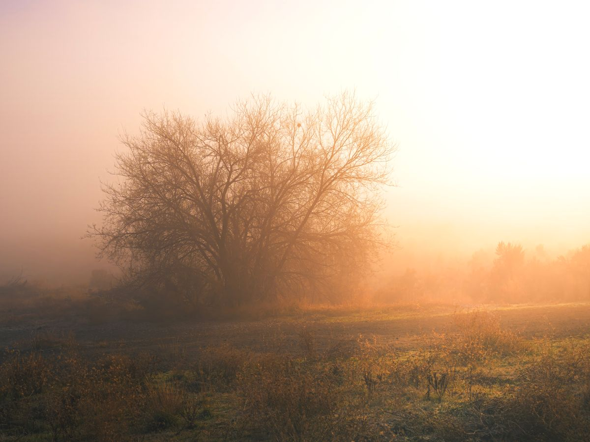
IlustračnéNemusíte vybavovať nič
Od prvého telefonátu až po deň pohrebu ide všetko cez nás. Nižšie je jednoducho napísané, čo sa deje a v akom poradí.
-
Zavoláte nám, kedykoľvek
Dvíhame v noci aj cez víkend. Poviete nám len, kde sa nachádzate — doma, v nemocnici alebo v zariadení. Zvyšok vysvetlíme my.
-
Prídeme a zabezpečíme prevoz
Prevoz zosnulého vybavíme s úctou a bez toho, aby ste sa o čokoľvek starali. Vy zostanete pri rodine.
-
Doklady vybavíme za vás
Vybavenie na matrike a papiere okolo úmrtia si berieme na starosť. Nemusíte obchádzať úrady ani stáť v radoch.
-
Spolu sa dohodneme na rozlúčke
Termín a priebeh smútočného obradu, hudba, kvetinová výzdoba, vence a ikebany. V pokoji si vyberiete rakvu a smútočné doplnky — kríž, šerpy, urnu. Ukážeme vám možnosti, nič netreba riešiť naraz.
-
Parte napíšeme, vytlačíme aj rozvezieme
Pomôžeme so znením, aby ste nemuseli hľadať slová. Tlač aj rozvoz parte zariadime.
-
V deň pohrebu je pripravené všetko
Či ide o pochovanie do zeme alebo o kremáciu — vrátane výkopových prác na cintoríne. Vy prídete a máte priestor na rozlúčku.
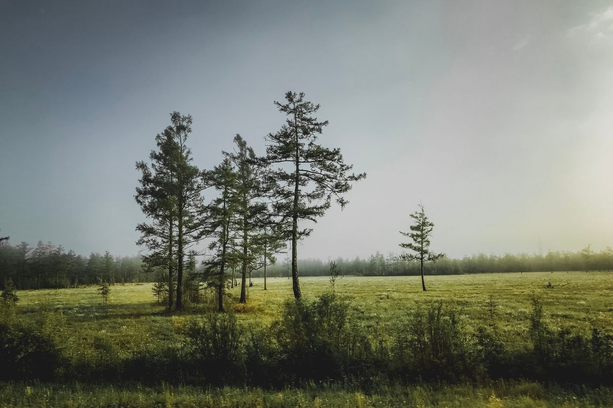
IlustračnéRadošovce a okolie
Pôsobíme v Radošovciach a v okolitých obciach okresu Skalica. Ak si nie ste istí, či prídeme aj k vám, zavolajte — dohodneme sa.
Rakvy
Vyberáte si v pokoji a bez tlaku. Okrem rakiev vieme zabezpečiť aj smútočné doplnky — kríž, šerpy či urnu.
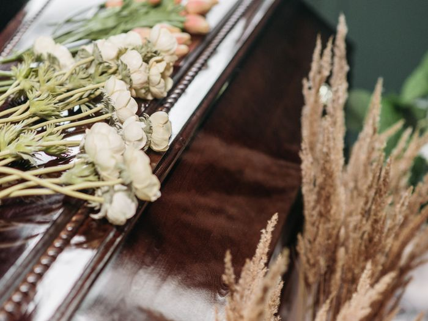
Ilustračné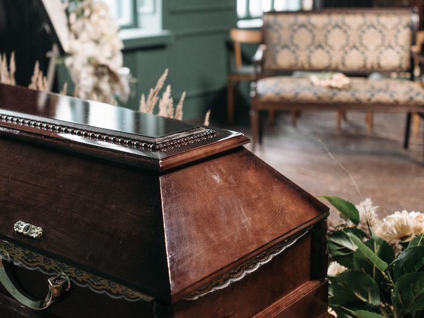
Ilustračné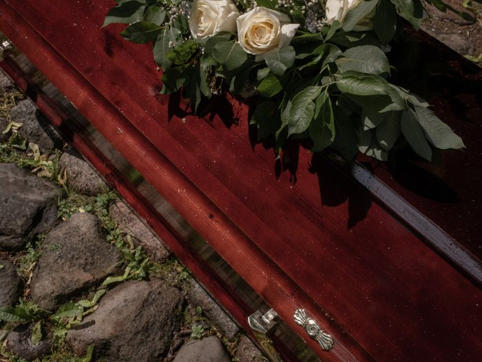
Ilustračné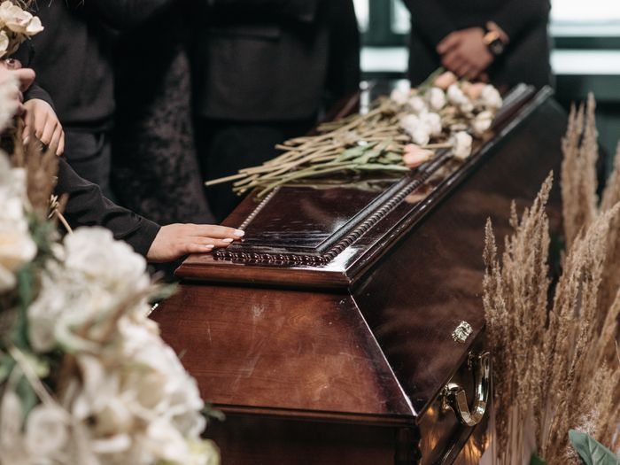
Ilustračné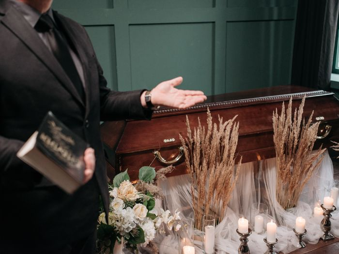
Ilustračné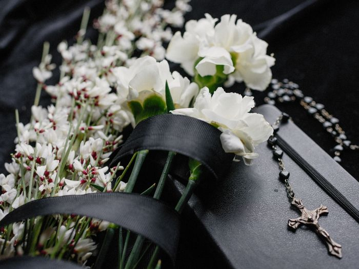
IlustračnéAk si neviete vybrať, zavolajte na 0910 131 601 a prejdeme to spolu.
Vence a ikebany
Kvetinovú výzdobu viažeme na objednávku. Vence a ikebany si môžete dohodnúť na samostatnej linke 0948 488 421.
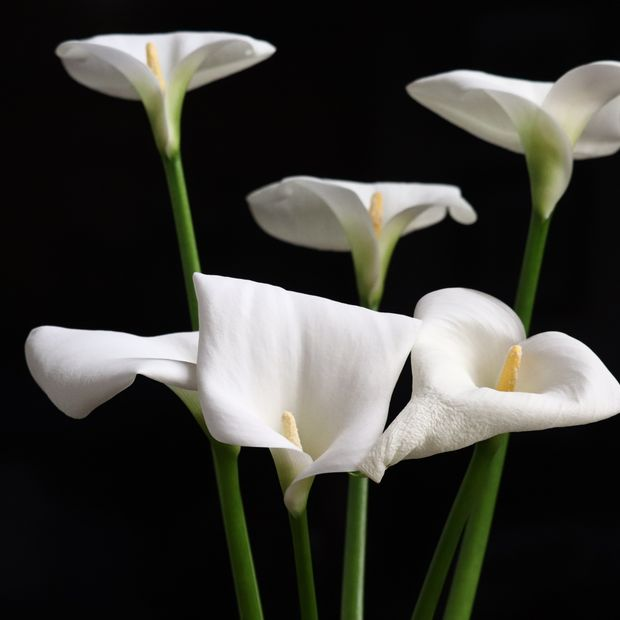
Ilustračné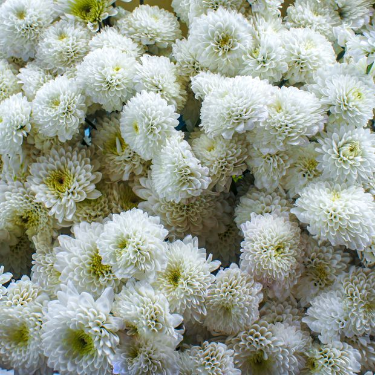
Ilustračné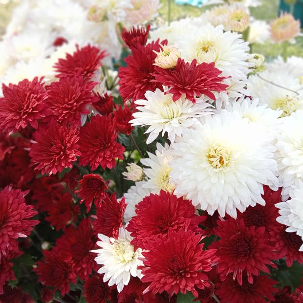
Ilustračné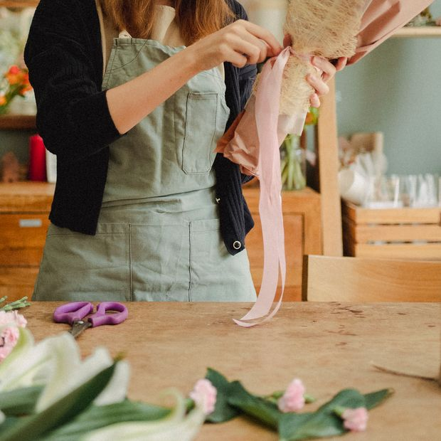
Ilustračné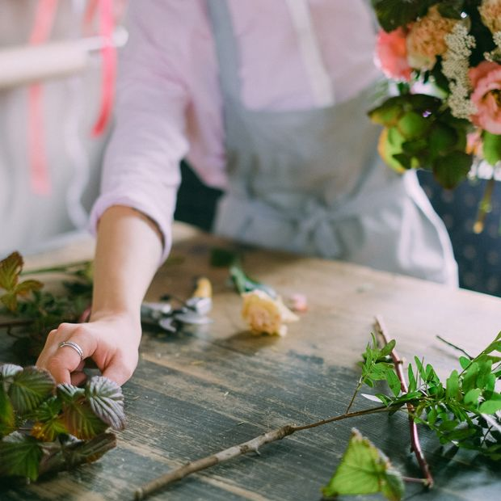
Ilustračné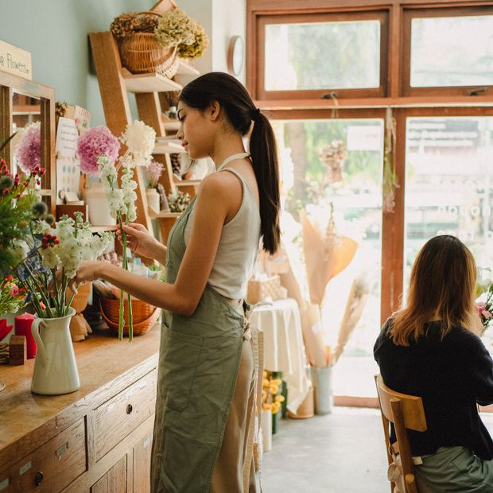
IlustračnéParte
Smútočné oznámenia tlačíme priamo u nás a následne ich aj rozvezieme — vy nemusíte nič roznášať ani nikam voziť. Pomôžeme aj so znením textu.
Nižšie sú len ukážky rozvrhnutia — zámerne bez mena, dátumu aj fotografie. Text a úpravu doladíme podľa vás.
Klasické
S fotografiou
So smútočným veršom
Jednoduché
Fotogaléria
Fotografie sú zatiaľ ilustračné — v ostrej verzii ich nahradia vlastné zábery z obradov a z prevádzky.
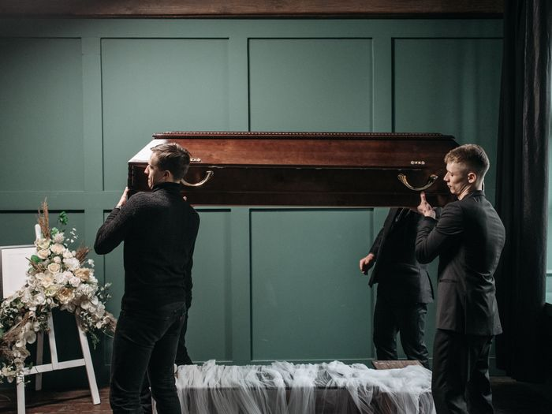
Ilustračné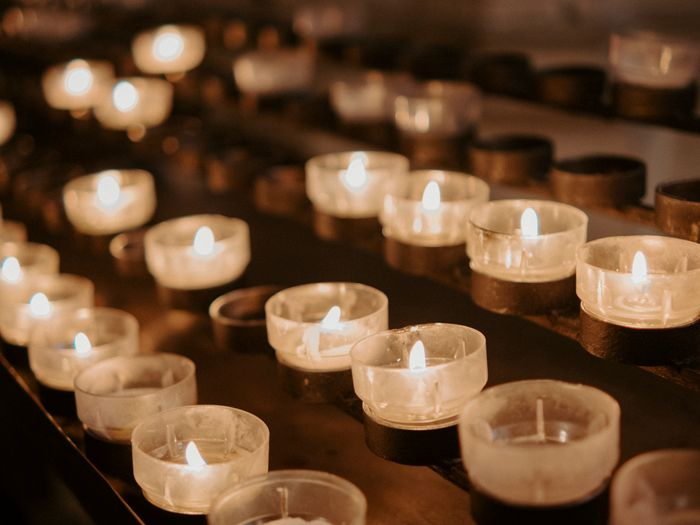
Ilustračné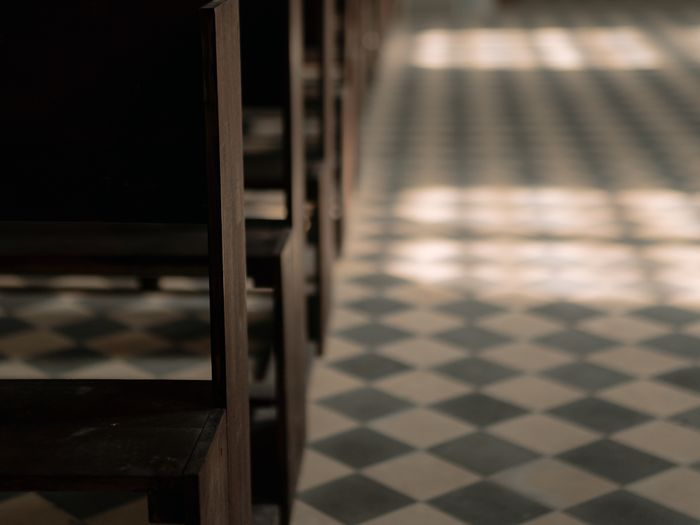
Ilustračné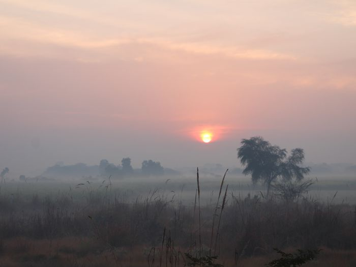
Ilustračné„veľmi citlivý prístup a veľká spokojnosť so službami spojenými s poslednou rozlúčkou. ďakujeme“
Veronika s rodinou
Nemusíte vedieť, čo povedať
Stačí, že zavoláte. Otázky položíme my a povieme vám, čo bude nasledovať.
Nonstop — úmrtie a prevoz 0910 131 601 Ťuknutím zavoláteNesúrna otázka? Napíšte nám.
Na vence, parte alebo čokoľvek, čo neznesie čakanie na telefón — ozveme sa vám späť.